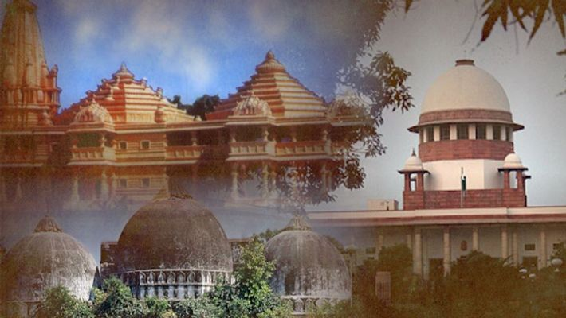
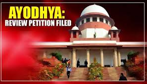
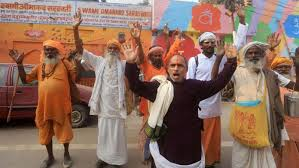

The final judgement in the Ayodhya dispute was declared by the Supreme Court of India on 9 November 2019. The Supreme Court of India ordered the disputed land (2.77 acres) to be handed over to a trust (to be created by Government of India) to build the Ram Janmabhoomi (revered as the birthplace of Hindu deity, Ram) temple. The court also ordered the government to give an alternate 5 acres of land in another place to the Sunni Waqf Board for the purpose of building a mosque.

2019 Supreme Court verdict on Ayodhya dispute
Ram has finally quit not just Ayodhya, but the very quality he embodies – justice
Series of events
#AyodhyaVerdict2019
{kind=link}
{kind=link}
{kind=link}
{kind=link}

Restrictions imposed before judgement
For 15 days preceding the verdict, restrictions were imposed in Ayodhya to prevent violence. Security arrangements were increased across India. Thousands of paramilitary forces and police troops were deployed in Ayodhya and surveillance of the region was carried out using CCTV cameras and drones. Internet services were closed in several places in Uttar Pradesh and Rajasthan, while it was announced that a total of 31 districts and 673 individuals were being closely monitored. Section 144 of the Code of Criminal Procedure of India was invoked in the entire state of Uttar Pradesh as well as in some major cities such as Bangalore, Bhopal, Jaipur, Lucknow, and Mumbai. A public holiday was declared for schools and colleges across the states of Jammu and Kashmir, Karnataka, Madhya Pradesh and Uttar Pradesh, as well as Delhi, on the day of the verdict. Security was stepped up across various towns in Telangana; 20,000 personnel deployed in Hyderabad, mainly around the communally sensitive areas of the Old City including the Charminar and Mecca Masjid. According to reports, around 40,000 police personnel were deployed in Mumbai and 15,000 in Chennai as a precautionary measure. The prime minister made a public request for maintaining peace and religious harmony.

Domestic reactions
The Sunni Central Waqf Board accepted the verdict and declared that it will not submit a review petition for the same. The Shahi Imam of the Jama Masjid, Delhi supported the verdict, saying that the dispute should not continue further. Some major industrial bodies supported the decision. A few celebrities also expressed their opinion in support for the decision and called for harmony and peace.

BY:- SAKSHAM DUBEY
RA1711003011217, BATCH -2, SUBMITTED TO:- MR. D. SENTHIL KUMAR